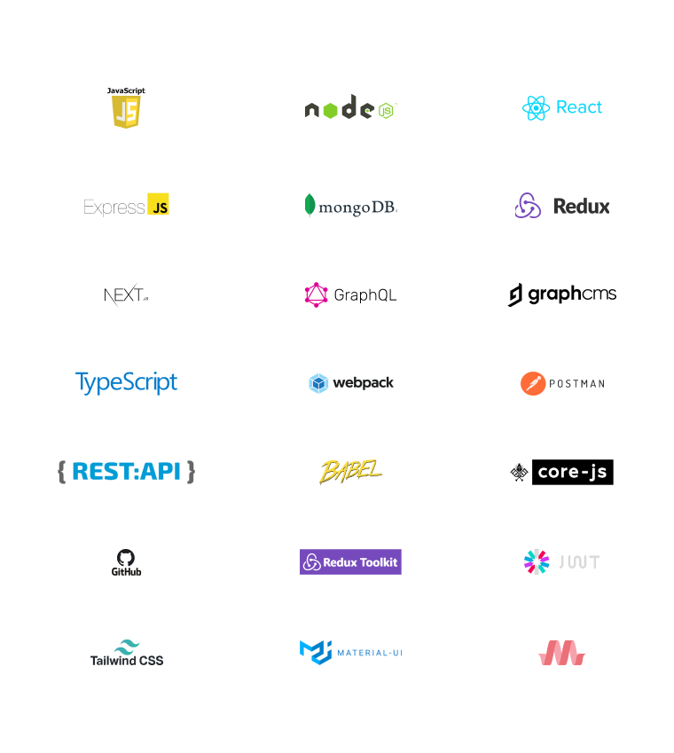

Full Stack Javascript (MERN)
MERN
Kurs davomida 7 ta katta, murakkab loyiha qilinadi. Bu loyihalar bilan junior sifatida birinchi ishni bemalol topish mumkin

MERN kursi orqali siz:
0 SO'M
evaziga bu kursni sotib oling!Ro'yxatdan O'tish Uchun
Full Stack Javascript (MERN) praktikum kursi tarkibi
Murakkab JavaScript
Ushbu modulda siz JavaScriptni chuqur o’rganasiz va amalda o’rganganlaringizni sinaysiz. Modul davomida berilgan vazifalarni qilib, o’qituvchi bilan bosqichma-bosqich haqiqiy loyihalar qilib borasiz. Nazariy bilimlar bilan cheklanmay, har bir o’rgangan narsalaringizni amaliyotda qo’llab ko’rasiz.
Javascriptning o’ziga kelsak, u veb sahifalardagi interaktiv til hisoblanadi. Hozirgi kunda internetda u siz bitta saytni ham tasavvur qilib bo’lmaydi. Va undan ham ko’proq! Turli xil frameworklar yordamida JavaScript quyidagi loyihalarda ishlatilishi mumkin: server tomoni (NodeJS), mobil ilova (ReactNative, Ionic), virtual reallik (ReactVR) va boshqalar.
Moduldan nimalar o'rganiladi?
Dasturlash asoslari va algoritmlar o’rganiladi;
Ob'ektga yo'nalirilgan dasturlash asoslarini o’rganiladi (OOP);
JavaScript tushunchalari va tamoyillari asoslarini, eng oddiydan eng murakkabiga qadar o’rganiladi;
AJAX, JSON va boshqa shu kabi mashhur texnologiyalar bilan ishlash o’rganiladi;
npm, Babel, Webpack va shunga o’xshash texnologiyalar bilan ishlashni o’rganiladi;
Modul oxirida o’tilgan mavzular bo’yicha amaliy loyiha qilinadi.
To'liq ReactJS, Redux & NextJS
Ushbu modulda ReactJS, state manegment Redux va React framework NextJS texnalogiyalarni to'liq o'rganib chiqiladi. Eng asosiysi, biz faqat amaliyot yordamida o'rganamiz..
ReactJS o'zi nima? Xozirga kunda JavaScript dasturlash tili uchun eng keng qo'llanib kelayotgan kutubxona, va ish vakansiyalar ham aynan ushbu kutubxona uchun juda ko'p. Qiziqarli va o’ziga xos. Facebook tomonidan ishlab chiqilgan bo’lsada, Facebookdan tashqari, Twitter, AirBnb, PayPal, Uber, Netflix, Vkontakte, Vimeo, Trello, Yandex xizmatlari va boshqa ko’plab yirik kompaniyalar ReactJS dan keng foydalanib kelishmqoda.
Moduldan nimalar o'rganiladi?
React bilan ishlashning asosiy ko'nikmalari - oddiy komponentlarni yaratish, dastur holatini va uning lifecycle jarayonini boshqarish o’rganiladi;
React bilan ishlashning mukammal ko'nikmalari - yaxshi natijaga erishish uchun zamonaviy usullari o’rganiladi;
Bitta sahifa dasturini yaratish (SPA) - saytga tashrif buyuruvchilarga brauzerda to'liq qayta yuklanmasdan sahifalar o'rtasida harakatlanish imkonini beradigan mashhur SPA-ilovalar yaratish o’rganiladi;
Hamma mavjud bo'lgan hook (ilgaklarni) tahlil qilish va React dasturlari bilan ishlash usulini o'zgartirgan o'zingizni ichki metodlaringizni yaratish o’rganiladi;
Portfolioga qo'shish mumkin bo'lgan 5dan ortiq kichik loyihalar qilinadi;
Modul oxirida o’tilgan mavzularni mustahkamlash uchun amaliy loyiha qilinadi
Backend: NodeJS ExpressJS & MongoDB
Modul NodeJSni o'rnatishdan tortib, tugallangan dasturni joylashtirish va uni serverda joylashtirishgacha bo'lgan asosiy ma'lumotlarni taqdim etadi.
Kursning amaliy qismining kulminatsiyasi katta statik onlayn do'kon va murakkab REST API ilovasini yaratishdir. Kurs darslarini takrorlash orqali siz noldan 2 ta ilova yaratishingiz va ularni portfoliongizga joylashtirishingiz mumkin bo'ladi.
Moduldan nimalar o'rganiladi?
JavaScript server qismini yozish
Barcha NodeJS infratuzilmasi
REST API yaratish
Ekspress bilan ilovalar yaratish
Ma'lumotlarni MongoDBda saqlash
NodeJS yordamida statik veb-saytlar yaratish
MERN Stack ijtimoiy tarmoq yasash
MERN bu MongoDB, Express.js, React.js va Node.js degan ma'noni anglatadi va birgalikda ushbu to'rtta texnologiya ajoyib vebilovalarni yaratishga imkon beradi.
Bu modul davomida ijtimoiy tarmoq sayti yasaladi.
Moduldan nimalar o'rganiladi?
Node.js & Express bilan backend API yaratish
Postman yordamida API sinovi
JWT asosidagi autentifikatsiya
Rasm yuklash
State manegment uchun kontekst API
React Hooks
React Router hooks
TYPESCRIPT, WEBPACK & REACTJS
Typescript Javascriptning "superset"idir. Agar siz Javascriptni bilsangiz, bu modulni o’qishga tayyor bo’lgan bo’lasiz. Typescript Javascriptga bir nechta muhim xususiyatlarni, jumladan, tip tizimini qo'shadi. Ushbu turdagi tizim xatolarni ish vaqtida emas, balki dizayn vaqtida aniqlashga yordam berish imkonini beradi. Xatoalrni avvaldan aniqlab, vaqtingizni tejab, samaraliroq ishlashni boshlaysiz.
Dokumentatsiyani o’qib, Typescriptni o'rganish oson emas. Bu modulning maqsadi har bir Typescript xususiyati nima uchun mavjudligini va ularni qayerda ishlatishni tushunishga yordam berishdir.
Typescriptni yaxshi bilish sizga boshqa dasturchilardan ajralib turish imkonini beradi.
Moduldan nimalar o'rganiladi?
Haqiqiy loyihalar ustida ishlash orqali Typescript asoslarini o'zlashtirish
2022-yilda Chrome kengaytmasini ishlab chiqishning nozik tomonlari
HTML, CSS va JavaScriptda standart kengaytmalarni ishlab chiqish va React, TypeScriptda zamonaviy ishlanmalarni yaratish
API’lari bilan ishlash uchun Chrome kengaytmalarida HTTP so‘rovlaridan foydalanish
Material UI kabi mashhur komponentlar kutubxonalari yordamida foydalanuvchi interfeyslarini yaratish
React, TypeScript va Webpackda o'rnatilgan ko'p funksiyali ob-havo kengaytmasini yaratish
Suhbatga tayyorlov, rezyume va ishga kirish jarayoni
Ushbu modul o'z ichiga oladi:
IT qanday imkoniyatlarni bizga taqdim etadi?
Birinchi ishni qanday qilib to’g’ri tanlash mumkin?
Kompaniyalar haqida. Ularning yaxshisini qanday ajratish mumkin?
Uzoq yillik karyera maqsadini qo’yish
Rezyume yozish sirlari
Hard skills va soft skills haqida tushuncha
Ish beruvchi bilan suhbatga qanday to'g'ri tayyorgarlik ko'rish va rad etishga to'g'ri munosabatda bo'lish
Ko'p Beriladigan Savollar
Kursga qanday ega bo'laman?
To'lovni amalga oshirganingizdan keyin, darhol yuborgan gmailingiz orqali darslarni ko'rishingiz mumkin.
Kurslar biz bilan qancha muddat qoladi?
Xarid qilgan kurslaringiz siz bilan umrbod qoladi. Xohlagan vaqtingiz kirib ko'rishingiz mumkin bo'ladi.
Keyinroq xarid qilsam bo'ladimi?
Afsuski yo'q. Bunday katta chegirmani, rostdan ham bilim olishni xohlagan insonlar... Kurslarimni moliyaviy tomondan qiynalmasdan sotib olishlari va haqiqatdan shug’ullanishlari uchun belgiladim.
Darslarni telefonimga yuklab olsam bo'ladimi?
Darslarni yuklab olishningiz shart emas. Chunki darslar siz bilan umrbod qoladi. Xohlagan vaqtingiz qaytadan kirib ko'rsangiz bo'ladi
Qanday kompyuter kerak?
Kursimiz ko’proq kod yozishdan iborat bo’lgani uchun sizga core i3 (so’ngi avlod), operatsion xotirasi 8 gb dan boshlanadigan kompyuter olish tavsiya qilinadi.
Kursni kimlar o’rgangani yaxshi?
Bu kursda siz veb dasturlashning Frontend va Backend qismini o’rganasiz va Full Stack dasturchi bo’lib chiqasiz. Full Stack dasturchilar eng talabgir mutaxassislardan biri bo’lib qolmoqda. Kurs davomida esa murakkab 7 ta real loyiha qilasiz. Bu esa birinchi ishingizni topish ehtimolini oshiradi.
Kursni bitirib qanday texnologiyalarni egallayman?
Siz kursni tugatgach ushbu texnologiyalarga ega bo’lasiz: JavaScript, NodeJs, ReactJs, ExpressJs, MongoDB, Redux, NextJs, OOP, GraphQL, GraphQLCMS, TypeScript, Webpack, Google Extention, Postman, Rest API,Babel, CoreJs, Github, Redux toolkit, JWT/Session, Tailwind CSS, MaterialIUI, Bootstrap, MaterializeCSS.
Kursni tugatib, qanday darajaga chiqaman?
Kursimizni tugatib, siz junior Full Stack Javascript dasturchi, boshqacha qilib aytganda ham frontend, ham backend qismida ishlay oladigan dasturchi bo’lasiz.